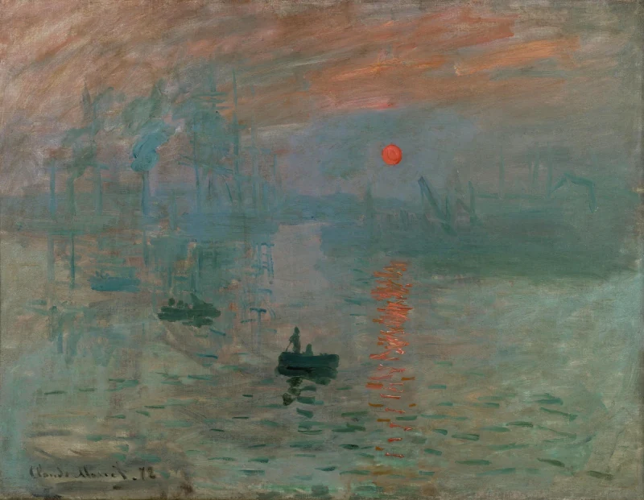

Visual Coding
Visual coding offers structured, editable representations, while diffusion adds flexible generation. Together, they may support controllable world models.
Exploring hybrid visual coding + diffusion as a pathway toward world models.
Bonjour 👋 I am a Ph.D. candidate in the Department of Computer Science at the University of Rochester, advised by Prof. Jiebo Luo. Previously, I earned my master's degree from Peking University (PKU) under the supervision of Prof. Li Yuan and Prof. Jie Chen, and my bachelor's degree with honors from the University of Electronic Science and Technology of China.
Research Interest: I study vision-language alignment for agentic AI, connecting multimodal understanding with visual generation.
Recent Focus
Visual coding offers structured, editable representations, while diffusion adds flexible generation. Together, they may support controllable world models.
Exploring hybrid visual coding + diffusion as a pathway toward world models.
The name connects Helmholtz free energy with Hinton et al.'s wake-sleep algorithm, which we adapt into an agentic learning loop over real and imagined experience.
Using generative models to construct environments toward Multimodal RSI.
@Menlo Park, Oct 2026
How should machines represent and understand the multimodal world?
How can multimodal models become capable and efficient agents?
Develop multimodal architectures and video representations, and evaluate and strengthen model capabilities.
Acquire evidence, coordinate planning and execution, and maintain working memory.
Spend computation on the information that matters for the task.
How can understanding improve generation data, control, and feedback?
How can we reliably measure generation capabilities and progress?
How can visual understanding become supervision that generation models can learn from?
How can semantic, reference, spatial, and dynamic constraints shape generated results?
How can we identify generation errors and use these judgments to improve generation?
How can we reliably assess generation capabilities and determine whether improvements work?
Enables editable 3D content creation through executable code, with a two-million-scale dataset and agents that generate, evaluate, and refine 3D programs.
Accelerates agentic visual reasoning with a lightweight speculative planner and confidence-based gating, reducing costly tool-use loops while preserving accuracy.
Generates time-lapse videos of evolving objects and scenes from language, learning patterns of physical transformation as a step toward metamorphic world simulation.
Builds compact shared video-language representations with expectation-maximization, reducing semantic redundancy for cross-modal retrieval.
Improves long-form video understanding with a dual-loop agent that retrieves past evidence and rewrites bounded working memory, reducing semantic thrashing during extended reasoning.
Accelerates agentic visual reasoning with a lightweight speculative planner and confidence-based gating, reducing costly tool-use loops while preserving accuracy.
Grounds long-video understanding in retrieved speech, on-screen text, and object cues, augmenting video-language models without additional training.
Improves hateful meme detection with Chain-of-Evolution prompting, using retrieved meme pairs and contextual cues to interpret evolving visual and textual meanings.
Learns fine-grained correspondences between video frames and text tokens through cooperative game theory, supporting video-text retrieval and video question answering.
Builds compact shared video-language representations with expectation-maximization, reducing semantic redundancy for cross-modal retrieval.
Examines multimodal social-media understanding across five tasks, identifying strengths in image-text interpretation and limitations in reasoning and factual reliability.
Evaluates whether generated videos preserve reference subjects, appear natural, and follow text instructions, with fine-grained metrics and a five-million-scale supporting dataset.
Measures meaningful transformations and temporal coherence in generated time-lapse videos, complementing visual quality and text alignment with evaluation of metamorphic change.
Benchmarks who is speaking, when to join a conversation, and how to respond, diagnosing gaps between audio-visual perception and socially appropriate interaction.
Enables editable 3D content creation through executable code, with a two-million-scale dataset and agents that generate, evaluate, and refine 3D programs.
Improves text-to-image prompt rewriting with reinforcement learning that groups updates by semantic spans, without separate span rewards or additional image renders.
Generates time-lapse videos of evolving objects and scenes from language, learning patterns of physical transformation as a step toward metamorphic world simulation.
Preserves human identity in text-conditioned video generation using frequency-aware facial features, supporting controllable visual futures without per-person fine-tuning.
Maintainer of
